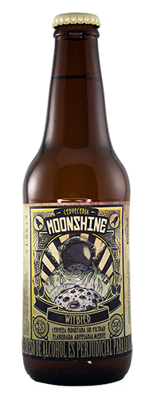
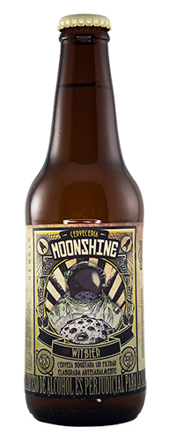
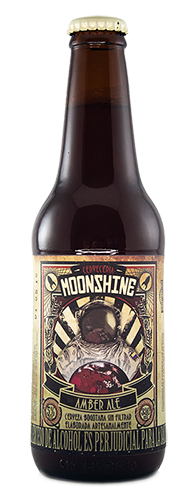
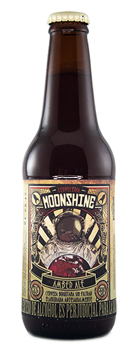
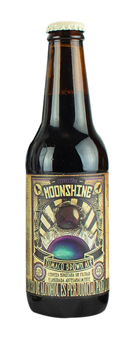
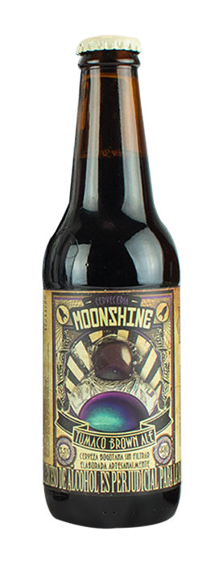

NUESTRA CERVEZA ARTESANAL
La vida es muy corta para no beber una buena cerveza
 

WITBIER
Elaborada artesanalmente sin filtración. Se caracteriza por su frescura y
sensación ligera en paladar con un aroma dulce similar a la vainilla, Dentro
de su receta se utilizan semillas de coriandro y cascara de naranja Tangelo local.
Excelente para maridar carnes blancas, pescado y mariscos.
 

AMBER ALE
Elaborada artesanalmente sin filtración. Se caracteriza por su frescura y
sensación ligera en paladar con un aroma dulce similar a la vainilla, Dentro
de su receta se utilizan semillas de coriandro y cascara de naranja Tangelo local.
Excelente para maridar carnes blancas, pescado y mariscos.

ZIPA IPA
Elaborada artesanalmente sin filtración. Se caracteriza por su frescura y
sensación ligera en paladar con un aroma dulce similar a la vainilla, Dentro
de su receta se utilizan semillas de coriandro y cascara de naranja Tangelo local.
Excelente para maridar carnes blancas, pescado y mariscos.

PEPPER STRONG ALE
Elaborada artesanalmente sin filtración. Se caracteriza por su frescura y
sensación ligera en paladar con un aroma dulce similar a la vainilla, Dentro
de su receta se utilizan semillas de coriandro y cascara de naranja Tangelo local.
Excelente para maridar carnes blancas, pescado y mariscos.
 

TUMACO BROWN ALE
Elaborada artesanalmente sin filtración. Se caracteriza por su frescura y
sensación ligera en paladar con un aroma dulce similar a la vainilla, Dentro
de su receta se utilizan semillas de coriandro y cascara de naranja Tangelo local.
Excelente para maridar carnes blancas, pescado y mariscos.
INDIA PALE ALE IPA
Es una cerveza muy lupulada y de color ambarino claro,
con ligera turbidez y espuma blanca cremosa.

ANTIGA CREAM ALE
Una cerveza ideal para todos los días.
¿No te gusta la cerveza artesana? Recomendada para las personas que buscan una cerveza «normal».
Cerveza suave, refrescante y bien atenuada, de bajo perfil maltoso, con ligeras notas dulces.

INDIA PALE ALE IPA
Cerveza negra con sabor intenso a café y frutos secos..

GRACAIS POR ELEJIRNOS
Disfruta la vida con una rica cerveza